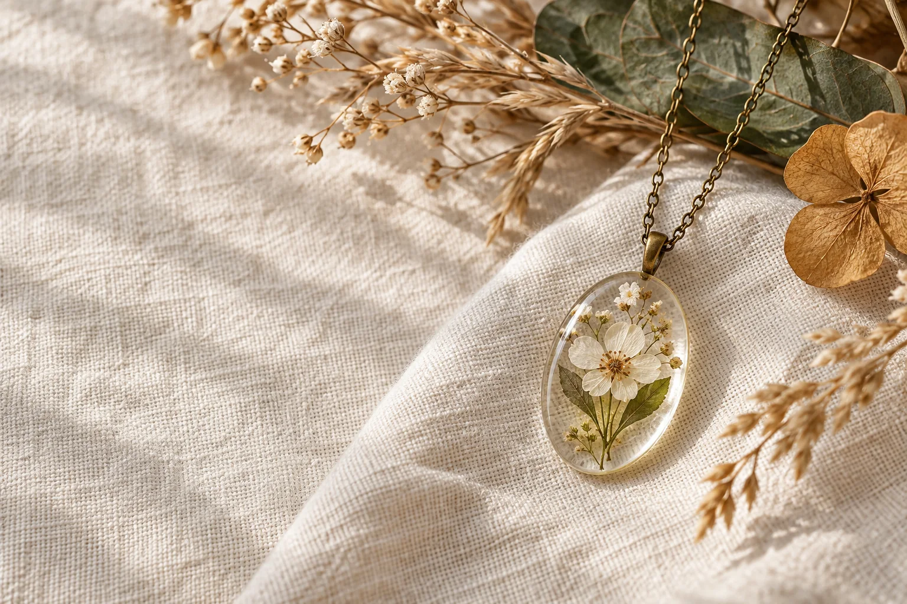

NATUREZA PARA LEVAR PERTOPequenos jardins,
Pequenos jardins,
grandes histórias.
Colares botânicos em resina para guardar a beleza de um instante.
Explorar a coleçãoUma pequena amostra de peças inspiradas na natureza. Consulte os detalhes e a disponibilidade pelo WhatsApp.
Flores, folhas e cores ganham um novo lugar em colares de resina. Cada composição é um convite para reparar nos pequenos detalhes.
Entre em contato ↗Escreva para perguntar sobre peças, disponibilidade ou detalhes da coleção.